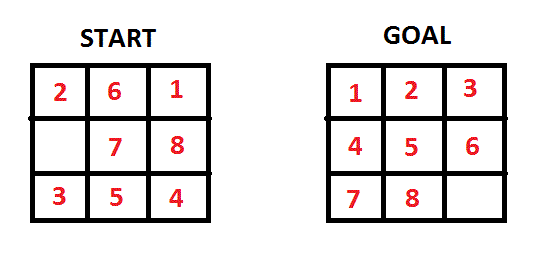

Manhattan distance is over estimating and making me crazy
I'm implementing a-star algorithm with Manhattan distance to solve the 8-puzzle (in C). It seems to work very well and passes a lot of unit tests but it fails to find the shortest path in one case (it finds 27 steps instead of 25).
When I change the heuristic function to Hamming distance it finds in 25 steps. Also finds in 25 steps when I make the Manhattan distance function to return a half of the actual cost.
That's why I believe the problem lies somewhere in Manhattan distance function and it is over estimating the cost (hence inadmissible). I thought maybe something else is going wrong in the C program so I wrote a little Python script to test and verify the output of the Manhattan distance function only and they both produce the exact same result.
I'm really confused because the heuristic function seems to be the only point of failure and it seems to be correct at the same time.

You can try this solver and put the tile order like "2,6,1,0,7,8,3,5,4" Choose the algorithm Manhattan distance and it finds in 25 steps. Now change it to Manhattan distance + linear conflict and it finds 27 steps.
But my Manhattan distance (without linear conflict) finds in 27 steps.
Here's my general algorithm:
manhattan_distance = 0 iterate over all tiles if the tile is not the blank tile: find the coordinates of this tile on the goal board manhattan_distance += abs(x - goal_x) + abs(y - goal_y)
I think if there was something very badly wrong with some important part it wouldn't pass all 25+ previous tests so this might be some sort of edge case.
Here's commented Manhattan distance function in C:
int ManhattanDistance(Puzzle p, State b){ State goal = getFinalState(p); int size = getSize(b); int distance = 0; if (getSize(goal) == size){ // both states are the same size int i, j; for(i=0; i<size; i++){ for(j=0; j<size; j++){ // iterate over all tiles int a = getStateValue(b, i, j); // what is the number on this tile? if (a != 'B'){ // if it's not the blank tile int final_cordinates[2]; getTileCoords(goal, a, final_cordinates); // find the coordinates on the other board int final_i = final_cordinates[0]; int final_j = final_cordinates[1]; distance += abs(i - final_i) + abs(j - final_j); } } } } return distance; }
Please help me.
EDIT: As discussed in comments, the code provided for opening nodes can be found here
Answer
The problem seems to be not in your heuristic function, but in the algorithm itself. From your description of the problem, and the fact that it occures only on some specific cases, I believe it has to do with the re-opening of a closed vertice, once you find a better path to it.
While reading the code you have provided [in comments], I think I understood where the problem lays, in line 20:
if(getG(current) + 1 < getG(children[i])){
This is wrong! You are checking if g(current) + 1 < g(children[i]), you
actually want to check for: f(current) + 1 + h(children[i]) <
g(children[i]), since you want to check this value with the heuristic
function of children[i], and not of current!
Note that it is identical as to set f(children[i]) =
min{f(children[i]),f(current)+1}, and then adding h(children[i]) to get the
g value.